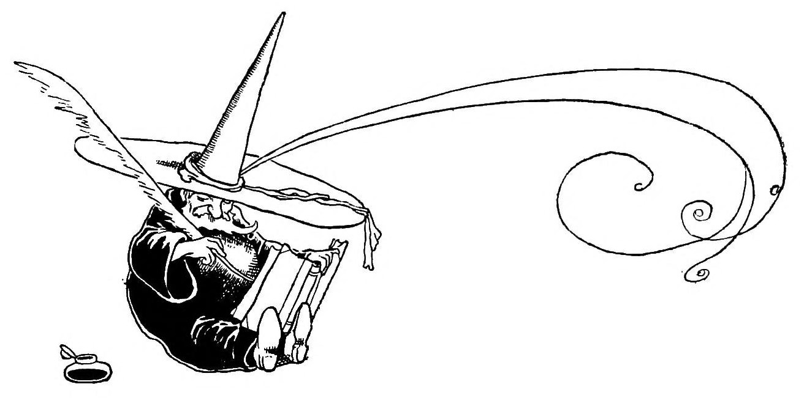

● a humble oasis of bookish musings from a lifelong lover of literature/erstwhile book dealer/and editor of Curiouser House Publishing, indie publisher of classic & obscure books ●
In which... oh no!
You might want to re-check that URL. Because that particular page does not exist on this website. Never fear, there are plenty of other pages here. Try again.
You might want to re-check that URL. Because that particular page does not exist on this website. Never fear, there are plenty of other pages here. Try again.
 Illustration by W. Heath Robinson for The Talking Thrush